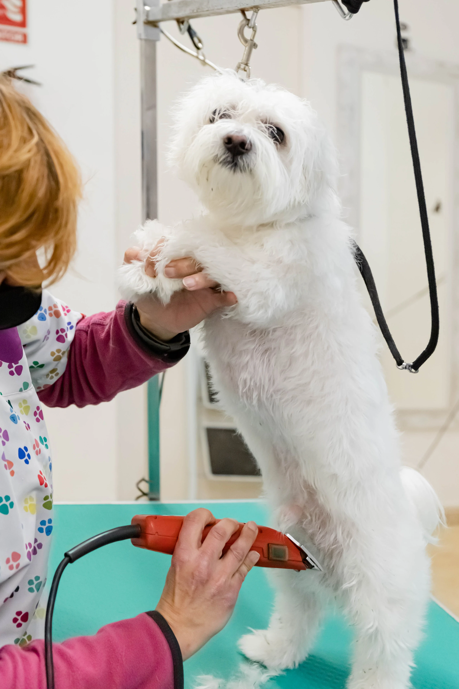
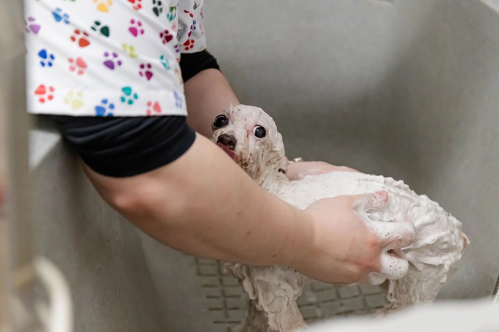
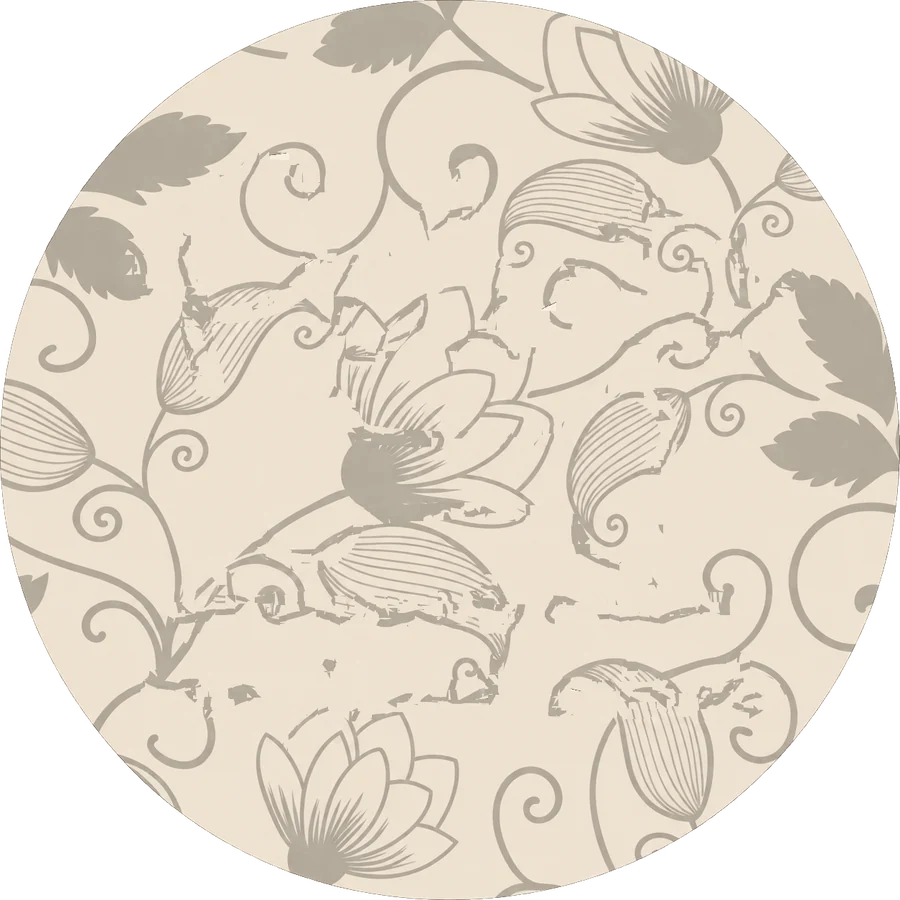

Cada raza, su cuidado
Baño, corte y mimo para perros de cualquier tamaño y pelaje. Con calma, con oficio y con ganas de que quiera volver.
Más que un baño: una buena experiencia
La higiene de tu perro empieza desde pequeño, y cuanto más agradable sea su experiencia, más fácil será cada visita. Por eso en Peluts nunca hay prisas.
Nuestro equipo trabaja con paciencia, productos adecuados a cada tipo de pelo y un trato cercano. Te escuchamos antes, te explicamos después y respetamos siempre lo que necesita tu perro.
- Cualquier raza y tamaño
- Cachorros y primeras visitas
- Corte a tijera o máquina
- Cita previa por WhatsApp


Cada visita, a su ritmo.

Perros
peluquería canina
Baño, secado y cepillado para dejarlo suave, limpio y oliendo bien.
Corte a tijera o máquina, según raza, pelaje y lo que prefieras.
Primeras visitas con calma para que asocien la peluquería a algo bonito.
Visitas periódicas para mantener el pelo sano y sin nudos.
Enséñanos una foto y te orientamos sobre servicio y tiempo.
Cada pelaje es un mundo: el precio depende de tamaño, pelo y servicio. Pregúntanos por WhatsApp.
Qué pasa cuando llegas
- 1
Valoración
Miramos el pelo y la piel, y hablamos contigo de lo que prefieres.
- 2
Baño
Con productos adecuados a su tipo de pelo y temperatura agradable.
- 3
Secado y cepillado
Sin tirones y con el tiempo que haga falta, para evitar nudos.
- 4
Corte y arreglo
El estilo acordado, respetando lo que necesita su pelaje.
- 5
Entrega y consejos
Te contamos cómo ha ido y cómo mantener su pelo en casa.

Cada pelaje pide algo distinto
Una referencia general de cómo cuidamos cada tipo. En la tienda te decimos qué necesita exactamente el tuyo.
Pelo corto
Baños según necesidad y cepillado frecuente en casa para retirar el pelo muerto y mantener la piel sana.
Pelo largo
Requiere cepillado regular y visitas más frecuentes para evitar nudos y mantener el pelo suelto y brillante.
Rizado o lanoso
Se enreda con facilidad. Con corte periódico y buen secado se mantiene cómodo y manejable.
Pelo duro o especial
Algunas razas necesitan un tratamiento específico. Cuéntanos la raza y te explicamos qué conviene.

Las primeras veces, bien hechas
Una buena primera experiencia marca todas las siguientes. Con los cachorros hacemos visitas cortas, tranquilas y llenas de mimo.
- Les enseñamos poco a poco el agua, el secador y la mesa.
- Sesiones cortas, sin forzar y con descansos.
- Te explicamos cómo continuar la rutina en casa.

Manos con paciencia y oficio


Una guía orientativa
Cada perro es distinto. Esto es solo una referencia general; en la tienda te decimos la frecuencia que le conviene al tuyo.

Perros de pelo corto
Suelen necesitar baño cada pocas semanas o según se ensucien, con cepillado en casa para retirar el pelo muerto.
Perros de pelo largo, rizado o lanoso
Necesitan visitas más frecuentes y cepillado regular para evitar nudos y que el pelo no se apelmace.
Cachorros
Conviene empezar pronto con visitas cortas y positivas, para que se acostumbren al secador, a la mesa y a las manos de la peluquera.
Perros mayores
Adaptamos el ritmo y las pausas para que estén cómodos durante todo el proceso.
Si tiene nudos
Cuéntanoslo al pedir cita: según el estado del pelo, a veces es mejor un corte que forzar el cepillado.
Lo que más nos preguntan
¿No ves tu duda? Escríbenos y te contestamos sin compromiso.

¿Cuánto dura una visita?
Depende del tamaño, el tipo de pelo y el servicio. Al pedir cita te decimos el tiempo aproximado.
¿Cómo pido cita?
Por WhatsApp (660 632 371 o 608 621 979), por mensaje directo en Instagram o con nuestro formulario de cita.
¿Y si mi perro es miedoso?
Cuéntanoslo antes. Adaptamos el ritmo, hacemos pausas y vamos poco a poco.
¿Qué corte le va mejor?
Te asesoramos según raza y pelaje. Si tienes una foto del corte que te gusta, enséñanosla.
¿Hay promociones?
De vez en cuando hacemos campañas, como el 30% en peluquerías por Halloween. Las anunciamos en Instagram y en el banner de la web.
¿En qué tienda me atienden?
Indícanos cuál te queda mejor al pedir cita: Sants, Zona Franca o Violant d'Hongria.

Reserva para tu perro
Cuéntanos cómo es y te buscamos hueco en la tienda que te quede mejor.